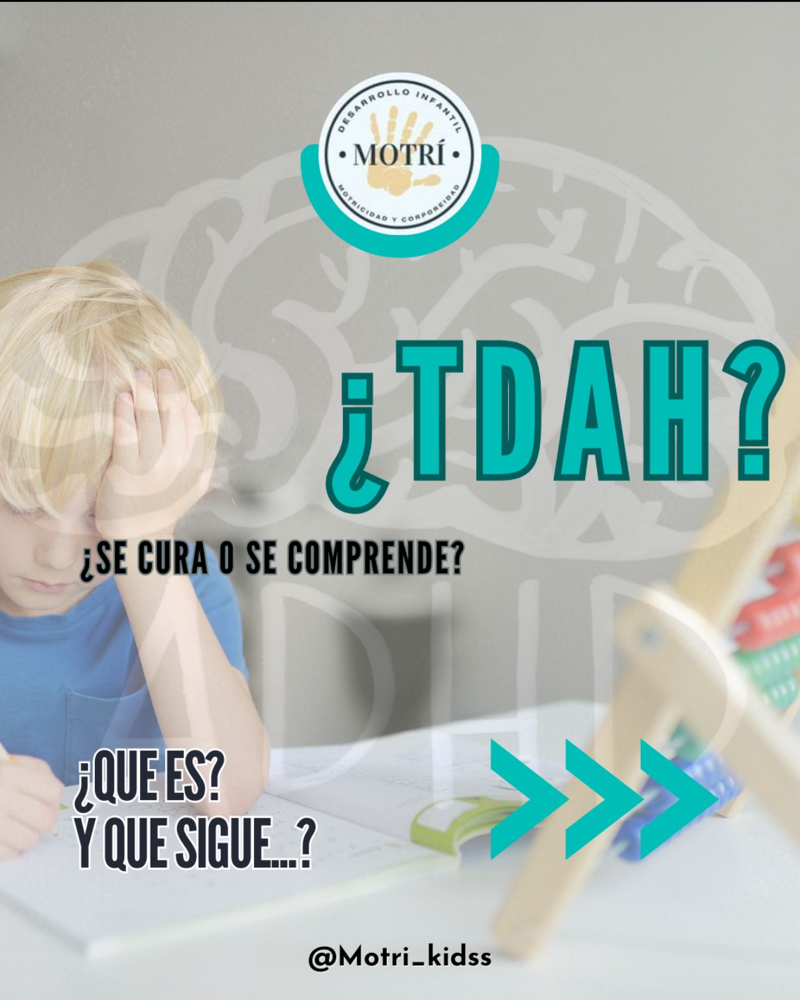
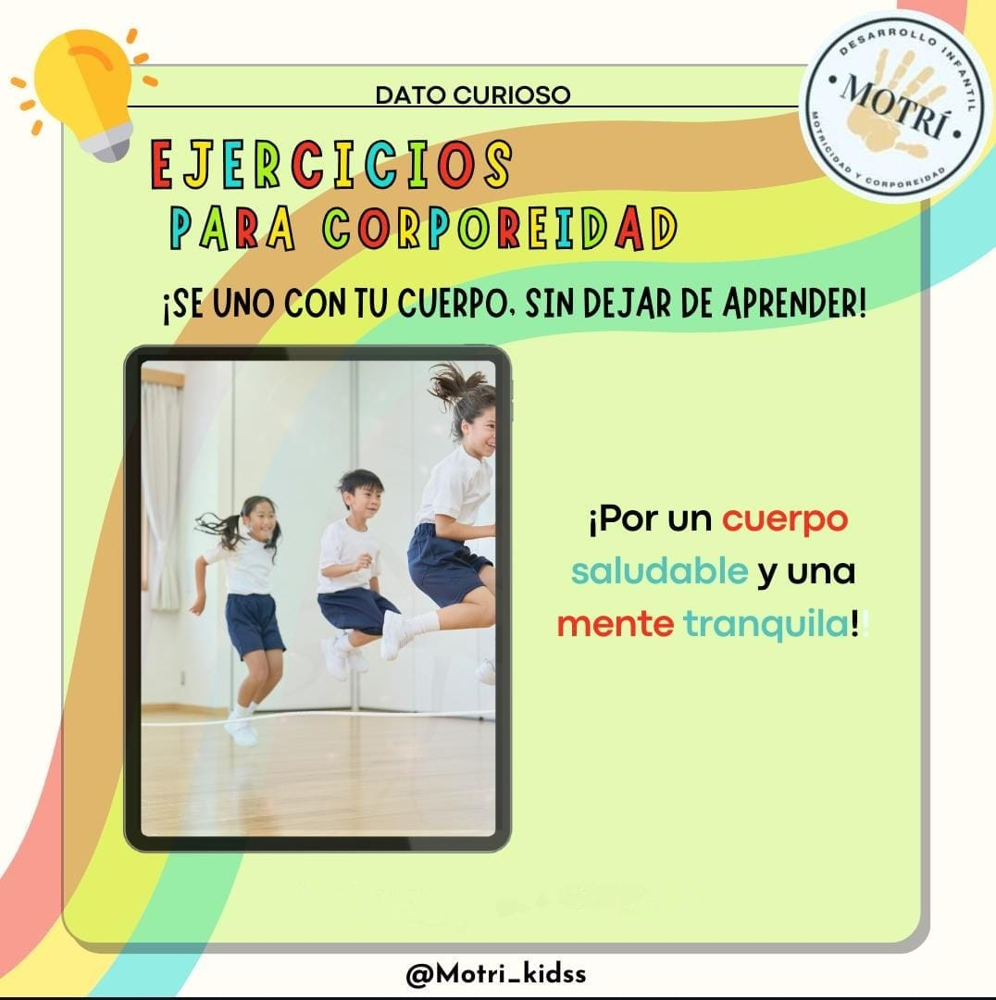
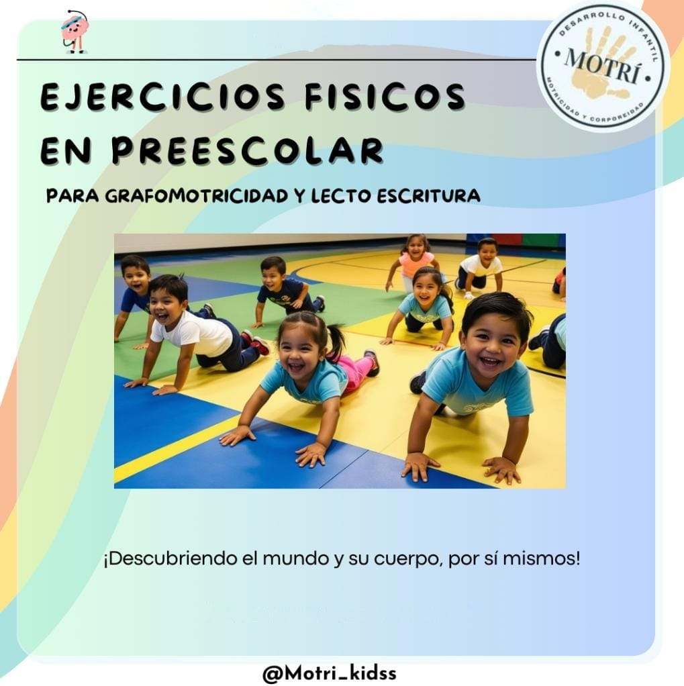

Nuestros Productos y Servicios
Terapia psicomotriz
Características:
- Divertido
- Inclusivo
- Dinamico
Precio: $700.00 por seción.
Beneficios: Desarrollo cognitivo, refuerzo de habilidades sociales, desarrollo físico, seguridad, confianza y aumento de capacidades fisicas, motrices y cognitivas.
Proceso de Elaboración/Funcionamiento: Evaluaciòn de nivel psicomotor para el aprendizaje Plan de trabajo de acuerdo a lo requerido segun la evaluaciòn. Seguimiento mensual con indicadores a evaluar. Muestra del proceso desde dia 1
Comprar/SolicitarEjercicios para corporeidad y propiocepción.
Características:
- Didacticas
- Se adaptan para el publico en general
Precio: $500.00 por persona.
Beneficios: Aumento de habilidades fisica, fortalecimiento de la confianza, desarrollo optimo de la ubicación espacial, aumento de la coordinación, trabajo para el refuerzo de lateralidad.
Proceso de Elaboración/Funcionamiento: Se hace una evaluación del nivel de proporción, y corporeidad, se crea un plan de trabajo con ejercicios y actividades para reforzar la lateralidad en el paciente, se da seguimiento al plan de trabajo, en forma presencial o en linea, se hace una evaluación final para la conclusión de la terapia.
Comprar/SolicitarEjercicios Fisicos en Prescolar
Características:
- Diverido y placentero.
- Libre y no estructurado.
Precio: $200.00 por persona.
Beneficios: Crecen fuertes y se desarrollan mejor, aprenden mas facil y se concentran mejor y hacen amigos y se sienten felices.
Proceso de Elaboración/Funcionamiento: Al implementar un programa de educación física bien estructurado, se sientan las bases para la adquisición de hábitos de vida saludables, el control de la conducta y el desarrollo de habilidades sociales como la cooperación y el respeto. En definitiva, es una inversión en el bienestar presente y futuro de los niños, preparándolos no solo para el siguiente nivel educativo, sino para una vida activa y plena..
Comprar/Solicitar